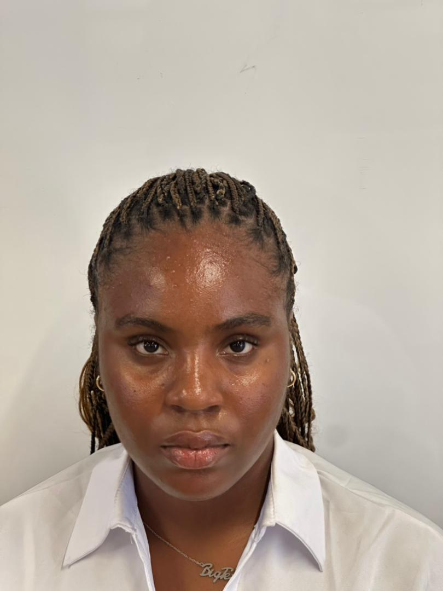
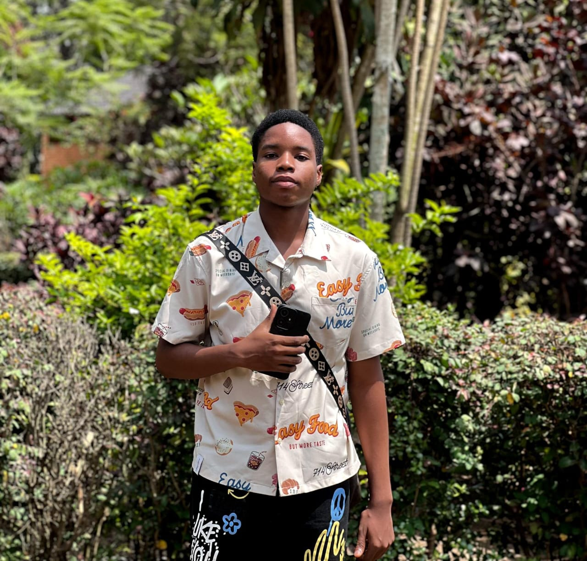
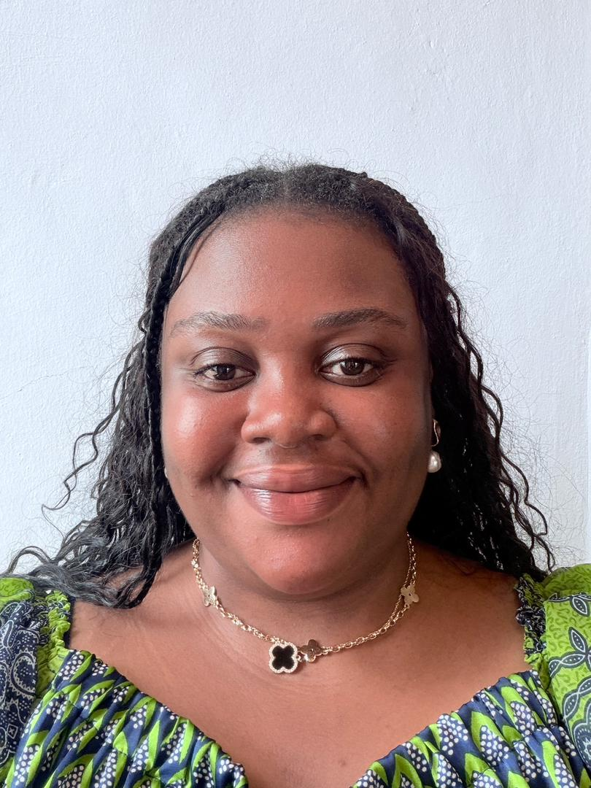

What ELITE Version 11 stands for
Our mission is to strengthen English proficiency among primary and secondary students in Rwandan public schools by supporting teachers and students through structured reading programs that enhance vocabulary, comprehension, and academic performance through increased English exposure and practical learning resources.
Teacher Support
We believe stronger teacher language capacity creates stronger classrooms and better learning outcomes.
Student Growth
Our reading-centered approach helps students build vocabulary, confidence, fluency, and comprehension.
Future Opportunity
Improved English proficiency opens pathways to higher education, scholarships, careers, and global networks.
Why this challenge matters
Core Problem
English proficiency among primary and secondary students in Rwandan public schools remains limited, which affects academic performance and progression.
The lower English pass rate compared with Science and Mathematics suggests that language barriers are directly affecting student success across the education system.
Context Behind the Problem
- Rwanda shifted from French to English as the language of instruction in 2008.
- Many learners grow up primarily speaking Kinyarwanda at home.
- Students often enter school with limited English exposure.
- Teachers may also face English proficiency challenges, making instruction harder.
- Code-switching is often used to bridge understanding, but it can limit deep English mastery.
The 8 Why chain
Our analysis shows that weak student performance in English is not just a classroom issue. It is connected to teacher development, system design, policy priorities, and accountability.
Why is there limited English proficiency?
Students struggle to understand and communicate effectively in English during lessons.
Why do students struggle with English?
Many teachers and students have weak English language foundations.
Why are English foundations weak?
Teachers receive limited English language training and ongoing professional development.
Why is teacher training limited?
There are few structured and continuous English upskilling programs for teachers.
Why are structured upskilling programs lacking?
The education system does not prioritize continuous English proficiency development.
Why is English proficiency not prioritized?
There is no national policy or accountability framework enforcing continuous language mastery.
Why is there no enforcement framework?
Language proficiency is not treated as a core performance indicator in teacher evaluation.
Why is language proficiency not a KPI?
There is no nationally funded, structured system for English proficiency development and monitoring.
A structured reading program with system-level support
ELITE Version 11 proposes partnerships with public primary and secondary schools to introduce structured English reading programs while advocating for stronger teacher development and accountability systems.
Continuous Teacher Training
Build teacher confidence and classroom effectiveness through regular English upskilling and support.
Early Student Intervention
Strengthen vocabulary, fluency, and comprehension early before learning gaps grow deeper.
Reading Resources
Provide practical and engaging materials that increase English exposure inside and outside the classroom.
Accountability and Monitoring
Promote systems where English mastery is tracked, valued, and supported as part of educational quality.
What success looks like
For Students
- Improved vocabulary and comprehension
- Better classroom participation
- Higher confidence in reading and communication
- Stronger academic performance across subjects
For Rwanda’s Future
- Improved educational quality in public schools
- Greater access to scholarships and higher education
- Expanded professional and international opportunities
- A stronger foundation for national competitiveness
Closing Statement
ELITE Version 11 believes that improving English proficiency is not only a language issue. It is an education quality issue, an opportunity issue, and a future-readiness issue. By supporting teachers, strengthening reading habits, and increasing structured English exposure, we can help more students thrive in school and beyond.
Meet the Team

Ndayisaba Alli Vladimir
Science and technology enthusiast with strong analytical thinking and creativity, driven by curiosity and innovation.
Tadiwanashe Chibwe
Passionate about art, design, and innovative business ideas, bringing creativity to impactful projects.

Ikenwe Testimony
Passionate about science and technology, driven by curiosity and a desire to build and empower.

Fateye-Adejuwon Tobias
A student who enjoys learning, creating, and solving problems across accounting, tech, and creativity.

Sophia Nyonyo
A curious and adaptable individual who values creativity, collaboration, and continuous learning.